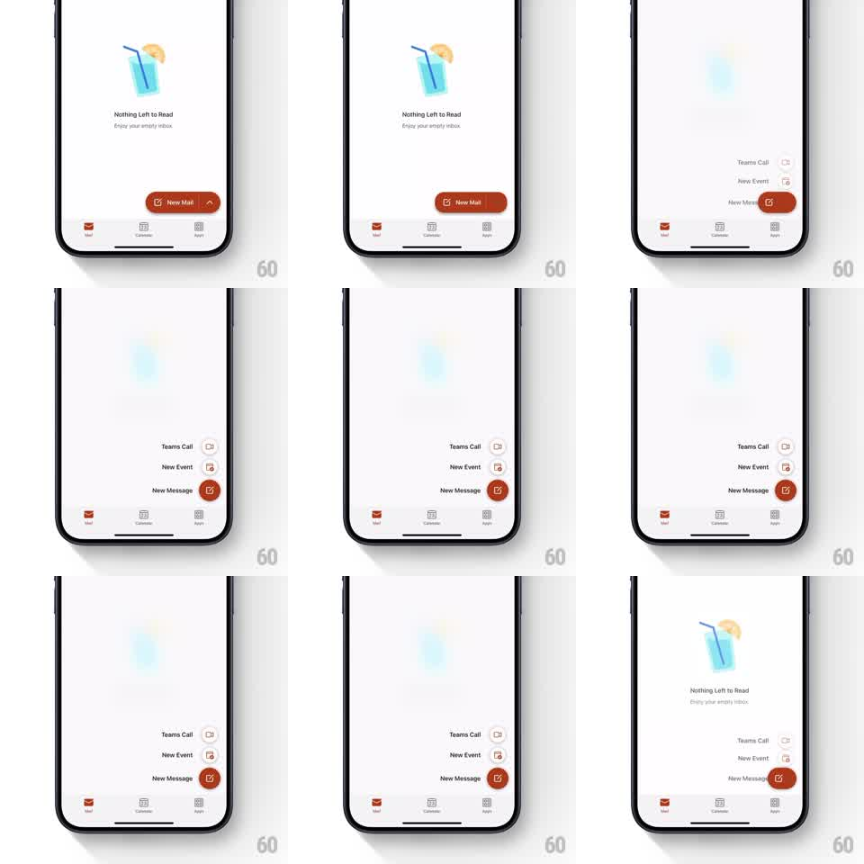

Media
Frame-by-frame

Rebuild this interaction 1:1: Outlook mobile's FAB expansion - tapping the red "New Mail" floating button blurs the inbox behind it and expands the button upward into a quick-actions stack (Teams Call, New Event, New Message) with staggered entrances.

Rebuild this interaction 1:1: Outlook mobile's FAB expansion - tapping the red "New Mail" floating button blurs the inbox behind it and expands the button upward into a quick-actions stack (Teams Call, New Event, New Message) with staggered entrances.
## Integration
Integration: stack-agnostic spec - springs given as stiffness/damping, timed motions as duration + curve; map every value to your framework and animation library of choice.
## Scene
Inbox empty state ("Nothing Left to Read" illustration) with tab bar and a red FAB reading "New Mail" with a compose icon, bottom-right. Expanded state: vertical stack of three labeled action rows (Teams Call, New Event, New Message), each label left of a small circular icon button, the FAB transformed into the bottom "New Message" row.
## Motion spec
Pattern: FAB-to-menu morph with backdrop blur + stagger.
- Backdrop: content blurs (0 -> ~12px) and dims slightly (150ms).
- FAB: the pill collapses its label and becomes the bottom circular action (150ms) as two more circular actions rise above it (translateY + fade, spring ~350/24, ~250ms).
- Rows stagger: bottom action first, then 60ms between the ones above; labels fade in 80ms after their circle.
- Close (tap backdrop or FAB): rows sink and fade in reverse order (~200ms), blur lifts.
## Calibration
- The original FAB must be visibly the same element as the bottom action - it never disappears.
- Stagger is bottom-up; labels trail their icons.
## Reduced motion
Menu fades in as a unit (150ms); no blur animation.
## Don't miss
- Icons stay right-aligned on a consistent vertical axis; labels sit to their left.
- Backdrop tap dismisses - the blur region is the dismiss target.